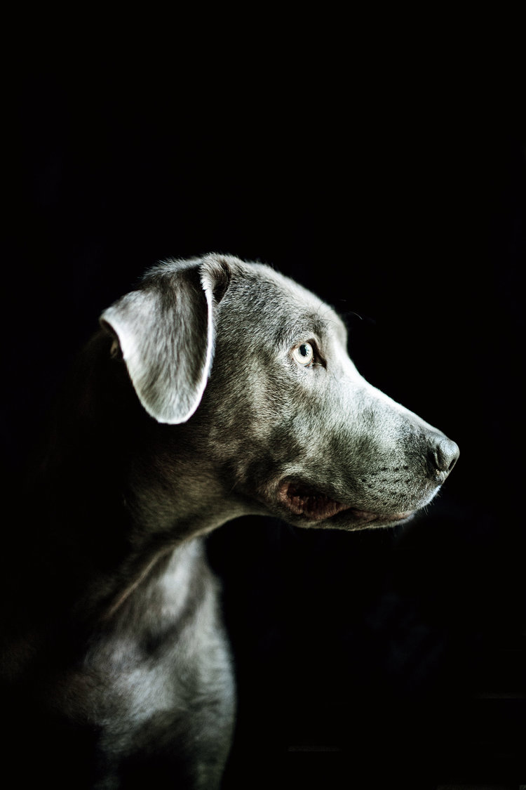
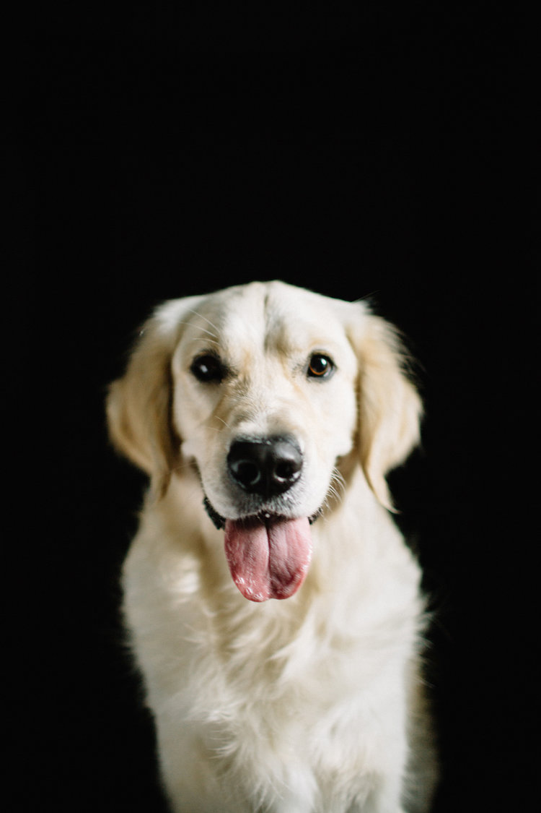
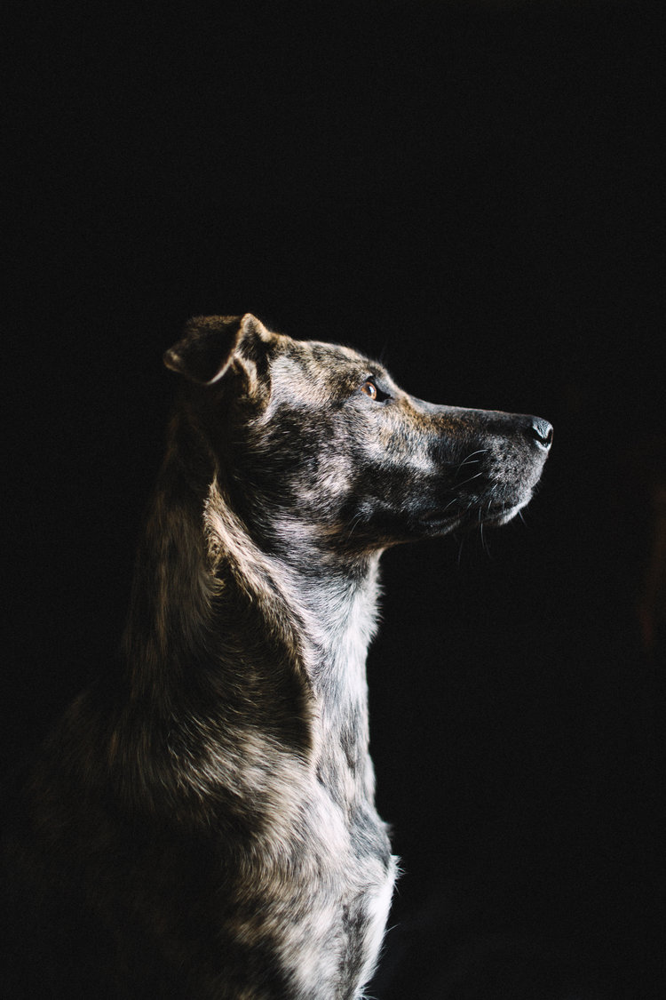

Meet Our Pups

Pedro
Calm and wise, Pedro is the perfect companion for an older individual looking for aless active experience. Responds well to commands and has a gorgeous, lustrous coat.

Jasmine
If you have young kids, Jasmine’s the perfect dog. Part playmate, part nanny, she’ll tire them out while keeping a watchful eye on everything. She also loves to cuddle at night!

Michael
Intelligent, alert and a bit mischievous, Michael is always up for an adventure. Whether you’re jumping in the car for a weekend road trip or going for a run, he’ll be by your side.

Philippe
Philippe is one of the most soulful dogs we’ve ever had in our care. Though shy, he’s capable of deep connection and is in search of a family who will love and appreciate him.

Dominic
If it’s tricks you’re after, Dominic is your dog. He’s a pro at running, fetching and catching a frisbee mid-flight. We can’t imagine a better companion for an active couple.

Tia
Tia is all about relaxation and is looking for someone who enjoys naps, lounging on the couch and gentle evening walks. She’s diabetic, but we’ll walk you through her care routine.